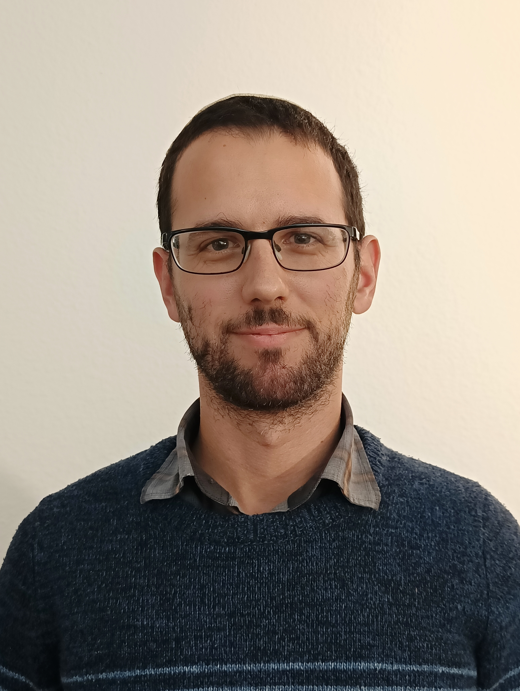

People
Lab Members
The Lab of Adaptive Structures is a new research group in the Faculty of Mechanical Engineering at the Technion.
People
The Lab of Adaptive Structures is a new research group in the Faculty of Mechanical Engineering at the Technion.